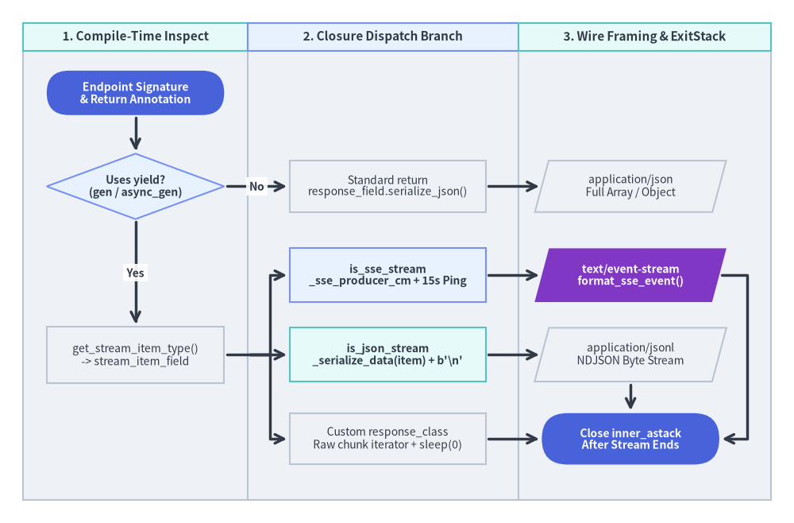
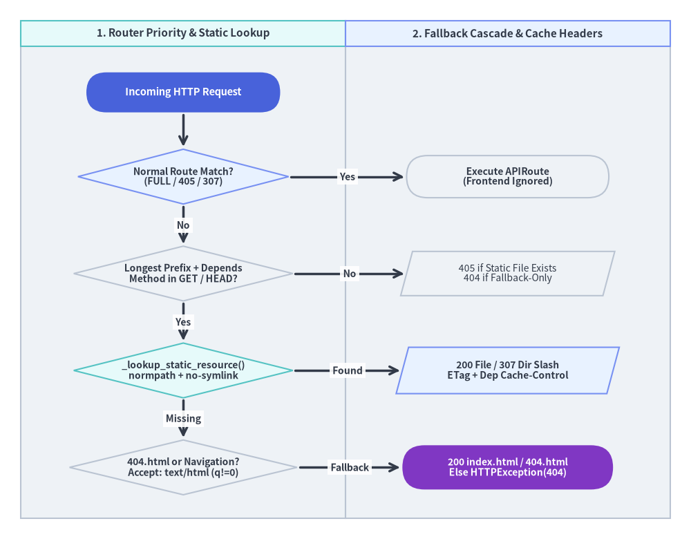

Generator Streaming (SSE / JSONL) & SPA Router Internals
Beyond request-response JSON endpoints, FastAPI v0.162.2 compiles two specialized runtime pipelines directly inside fastapi/routing.py and fastapi/sse.py: native generator streaming—which turns yield path operations into per-item validated JSON Lines (application/jsonl) or PEP 789-safe Server-Sent Events (text/event-stream) while holding fastapi_inner_astack open until stream completion—and the low-priority SPA engine (APIRouter.frontend() / _FrontendRouteGroup), which serves static assets and HTML5 history fallbacks behind normal API routes with strict traversal and Accept-header guards.

1. Compile-Time Generator Detection & stream_item_field Synthesis
During _populate_api_route_state(), FastAPI tests whether the unwrapped endpoint callable is a synchronous or asynchronous generator (is_generator = _is_async_gen_callable(route.dependant.call) or _is_gen_callable(route.dependant.call)). This compile-time flag splits return-type compilation into four distinct execution modes:
Endpoint Form & response_class |
is_sse_stream |
is_json_stream |
Compiled ModelField |
Wire Content-Type & OpenAPI 3.2 Schema |
|---|---|---|---|---|
def / async def with return (list[Item]) |
False |
False |
response_field (Response_<id>) |
application/json (schema array accumulation) |
yield + Default(JSONResponse) |
False |
True |
stream_item_field (StreamItem_<id>) |
application/jsonl (itemSchema per-line model) |
yield + EventSourceResponse |
True |
False |
stream_item_field (unless ServerSentEvent) |
text/event-stream (_SSE_EVENT_SCHEMA / itemSchema) |
yield + explicit StreamingResponse |
False |
False |
None (response_model = None) |
Custom media_type (raw chunk passthrough) |
When response_model is left at Default(None) on a generator endpoint, get_stream_item_type(return_annotation) checks whether get_origin(annotation) belongs to _STREAM_ORIGINS ({AsyncIterable, AsyncIterator, AsyncGenerator, Iterable, Iterator, Generator}):
- Parameterized Stream Types (
AsyncIterable[Item],Generator[Item, None, None]): Extractstype_args[0](Item) asroute.stream_item_type, clearsroute.response_model = None(since the endpoint yields items incrementally rather than returning a single container), and buildsroute.stream_item_field = create_model_field(name="StreamItem_" + route.unique_id, type_=Item, mode="serialization"). - Bare Stream Annotations (
-> AsyncIterable,-> Iterable):get_stream_item_type()returnsAny, settingstream_item_type = Anyso items still stream as JSONL/SSE viaTypeAdapter(Any). ServerSentEventExclusion: If the return type isAsyncIterable[ServerSentEvent],not lenient_issubclass(stream_item, ServerSentEvent)skipsstream_item_fieldcreation becauseServerSentEventis a wire-framing envelope rather than a domain payload schema.
2. Runtime Streaming Pipelines: JSONL, SSE TaskGroup & fastapi_inner_astack
2.1 Shared Per-Item Validation (_serialize_data) & JSONL Framing
Inside get_request_handler(), both JSONL and SSE share an inner _serialize_data(data: Any) -> bytes helper:
- When
stream_item_fieldis present, each yielded item is validated incrementally viastream_item_field.validate(data, {}, loc=("response",))(raisingResponseValidationErrormid-stream if an item violates the schema) and serialized directly to UTF-8 JSON bytes viastream_item_field.serialize_json(...), honoringresponse_model_include,response_model_exclude,by_alias,exclude_unset,exclude_defaults, andexclude_none. - When
stream_item_fieldisNone, FastAPI falls back tojsonable_encoder(data)followed by_normalize_non_finite_floats(data)(convertingNaN,Infinity, and-Infinityfloats into JSONnull) andjson.dumps(...).encode("utf-8").
For is_json_stream (application/jsonl), FastAPI wraps gen = dependant.call(**solved_result.values) in _async_stream_jsonl() (for async generators) or _sync_stream_jsonl() (for sync generators, iterated in Starlette's threadpool by StreamingResponse), appending b"\n" to every serialized item. Async generator wrappers explicitly execute await anyio.sleep(0) after every yield (also applied in raw _async_stream_raw for explicit StreamingResponse endpoints) to insert an anyio cancellation checkpoint—ensuring client disconnects cancel fast CPU-bound producers that never otherwise suspend.
Crucially, because request_response() enters scope["fastapi_inner_astack"] outside await response(scope, receive, send), any request-scoped yield dependency (such as an async SQLAlchemy session) stays open throughout the entire StreamingResponse body iteration and executes its finally block only after the last chunk is sent or the client disconnects.
2.2 fastapi/sse.py: EventSourceResponse, ServerSentEvent & PEP 789 Producer TaskGroup
fastapi/sse.py defines the public types and wire encoder for Server-Sent Events:
EventSourceResponse(StreamingResponse): Marker subclass settingmedia_type = "text/event-stream". Works on any HTTP method (GET,POST, etc.), enabling protocols such as Model Context Protocol (MCP) that stream SSE overPOST.ServerSentEvent(BaseModel): Structured envelope withdata: Any = None(always JSON-serialized, so"hello"becomesdata: "hello"),raw_data: str | None = None(unquoted raw string, enforced mutually exclusive withdatavia@model_validator(mode="after")), single-lineevent, null-free single-lineid,retry: int | None(Field(ge=0)), andcomment: str | None.format_sse_event(): Splitscommentanddata_strexclusively on SSE-spec line endings (\r\n,\r,\n) via_split_sse_lines(), emits: <comment>,event: <event>, onedata: <line>per line,id: <id>, andretry: <retry>, and terminates every frame with\n\nencoded as UTF-8bytes.
At runtime, is_sse_stream avoids wrapping anyio.fail_after(_PING_INTERVAL) directly around gen.__anext__()—which would inject CancelledError into a slow user generator on idle timeout and prematurely finalize it! Instead, FastAPI enters @asynccontextmanager async def _sse_producer_cm() onto fastapi_inner_astack (await async_exit_stack.enter_async_context(_sse_producer_cm())):
- Decoupled Memory Object Streams: Creates two bounded
anyio.create_memory_object_stream[bytes](max_buffer_size=1)channels (send_stream/receive_streamandsend_keepalive/receive_keepalive) inside ananyio.create_task_group(). - Producer & Keepalive Tasks:
_producer()pulls items fromgen.__aiter__()(oriterate_in_threadpool(gen)for sync generators) and serializesServerSentEventinstances or plain objects intosend_stream. Concurrently,_keepalive_inserter()awaitsreceive_stream.receive()insidewith anyio.fail_after(_PING_INTERVAL):(15.0seconds), forwarding serialized frames or emittingKEEPALIVE_COMMENT = b": ping\n\n"onTimeoutErrorto prevent reverse-proxy idle disconnects. - PEP 789-Safe Teardown & Anti-Buffering Headers: Entering
_sse_producer_cm()onfastapi_inner_astackguarantees theTaskGroupcancels cleanly during structuredAsyncExitStackunwinding rather than insideGeneratorExitfinalization. TheStreamingResponseconsumes_sse_with_checkpoints(sse_receive_stream)and setsCache-Control: no-cacheplusX-Accel-Buffering: no(disabling Nginx proxy buffering).
3. SPA Engine Internals (APIRouter.frontend & _FrontendRouteGroup)
app.frontend(path, directory=..., fallback="auto", check_dir="auto") and router.frontend(...) mount static Single-Page Application (SPA) builds without shadowing API endpoints:
- Startup Directory Validation (
_resolve_frontend_check_dir): Whencheck_dir="auto", FastAPI enforces strict directory and fallback file existence (RuntimeError) in production, while downgrading missing build directories to aUserWarningwhenFASTAPI_ENV == "development"(set automatically byfastapi devbefore the frontend bundler has emitteddist/). - Global Low-Priority Dispatch Order:
APIRouter.frontend()lazily createsself._frontend_routes = _FrontendRouteGroup(...)and appends it toself._low_priority_routes(excluded from OpenAPI schemas). InsideAPIRouter.app(), incoming requests always evaluate all normalself.routes(including nested_IncludedRouterAPI routes) in strict priority before touching_match_low_priority(scope):- Normal
Match.FULL(APIRoute,APIWebSocketRoute,Mount) - Normal
Match.PARTIAL(405 Method Not Allowedon a matched API path beats any frontend fallback!) redirect_slasheson normal routes (307 Temporary Redirectto/api/beats frontend files!)_match_low_priority(scope): Selects the matching_FrontendRoutewith the highest_frontend_path_specificity(path)(0for"/",len(path)otherwise) across segment boundaries, then runs router/appdependenciesin outer-to-inner order via_FrontendRouteGroup._solve_dependencies().
- Normal

Inside _FrontendStaticFiles(StaticFiles) (initialized with html=True and follow_symlink=False), get_response(path, scope) enforces four security and protocol rules:
- Method & Traversal Protection (
_lookup_static_resource): Normalizesscope["fastapi"]["frontend_path"]viaos.path.normpathand executesself.lookup_path(path)insiderun_in_threadpool. Becausefollow_symlink=Falseand Starlette validatesos.path.commonpath, path traversal payloads (/../,%2e%2e,%5c) and symlinks escapingdirectoryresolve to404(PermissionErrormaps to401;ENAMETOOLONGmaps to404). Non-GET/HEADrequests return405only if_lookup_static_resourcefinds a real static file or directoryindex.html;POSTrequests to virtual client-side paths return404. - Directory Slash Redirect: If
pathresolves to a subdirectory containingindex.htmlandscope["path"]lacks a trailing"/", FastAPI returns a307RedirectResponsetourl.path + "/"so relative asset URLs resolve cleanly. - Fallback Cascade &
_is_frontend_navigation_request(scope): When no static file matches:404.htmlPrecedence: Iffallback == "404.html"or (fallback == "auto"and404.htmlexists), FastAPI serves404.htmlwithstatus_code=404for allGET/HEADmisses.- Explicit HTML Navigation Check for
index.html: Otherwise, ifindex.htmlis configured/present, FastAPI calls_is_frontend_navigation_request(scope), which parsesAcceptmedia ranges via_iter_accept_media_types()(email.message.Message). It returnsTrueif and only if the client explicitly advertisestext/htmlorapplication/xhtml+xmlwith qualityq != 0. Relying onAcceptrather than file-extension heuristics ensures dotted SPA routes like/users/jane.doeor/v/1.2.3receive200 index.htmlon browser navigation, while missing subresources (/assets/missing.jssent withAccept: */*ortext/css) cleanly receive404instead of corrupting the browser's JS parser with HTML!
- Conditional Caching &
Cache-ControlHeader Synthesis: Starlette'sfile_response()automatically populatesETagandLast-Modifiedheaders (honoringIf-None-Match/If-Modified-Since304responses). Because_FrontendRouteGroup.handle()mergessolved_result.response.headers.rawonto the staticFileResponse, router dependencies can attach differentiatedCache-Controlheaders—such aspublic, max-age=31536000, immutableon fingerprinted/assets/*bundles versusno-cacheon fallbackindex.htmlresponses.
4. Source-Verified Streaming & SPA Routing Inspection
4.1 Inspecting stream_item_field, JSONL Output & format_sse_event() Wire Framing
The snippet below verifies compile-time is_json_stream / is_sse_stream / stream_item_field synthesis alongside format_sse_event() wire encoding and TestClient streaming responses:
import json
from collections.abc import AsyncIterable
from fastapi import FastAPI
from fastapi.routing import APIRoute
from fastapi.sse import EventSourceResponse, ServerSentEvent, format_sse_event
from fastapi.testclient import TestClient
from pydantic import BaseModel
class MetricChunk(BaseModel):
step: int
loss: float
tag: str | None = None
app = FastAPI()
@app.get("/metrics.jsonl", response_model_exclude_none=True)
async def stream_jsonl() -> AsyncIterable[MetricChunk]:
yield MetricChunk(step=1, loss=0.42)
yield MetricChunk(step=2, loss=0.19, tag="converged")
@app.get("/metrics.sse", response_class=EventSourceResponse)
async def stream_sse() -> AsyncIterable[MetricChunk | ServerSentEvent]:
yield MetricChunk(step=1, loss=0.42)
yield ServerSentEvent(
data={"done": True}, event="complete", id="evt-2", retry=5000
)
routes = {r.path: r for r in app.router.routes if isinstance(r, APIRoute)}
assert routes["/metrics.jsonl"].is_json_stream is True
assert routes["/metrics.jsonl"].stream_item_field is not None
assert routes["/metrics.sse"].is_sse_stream is True
assert format_sse_event(data_str='{"ok":true}', event="tick", id="1") == (
b'event: tick\ndata: {"ok":true}\nid: 1\n\n'
)
client = TestClient(app)
r_jsonl = client.get("/metrics.jsonl")
assert r_jsonl.headers["content-type"] == "application/jsonl"
assert [json.loads(line) for line in r_jsonl.text.splitlines()] == [
{"step": 1, "loss": 0.42},
{"step": 2, "loss": 0.19, "tag": "converged"},
]
r_sse = client.get("/metrics.sse")
assert r_sse.headers["cache-control"] == "no-cache"
assert r_sse.headers["x-accel-buffering"] == "no"
assert 'event: complete\ndata: {"done": true}\nid: evt-2\nretry: 5000\n\n' in r_sse.text
4.2 Verifying _FrontendRouteGroup Priority, Traversal Protection & Cache-Control Synthesis
This snippet mounts a SPA directory via router.frontend() with a Cache-Control policy dependency, demonstrating API route priority, fingerprinted immutable asset headers, no-cache HTML fallback on dotted client routes, */* asset 404 rejection, and %2e%2e traversal blocking:
from pathlib import Path
from tempfile import TemporaryDirectory
from fastapi import APIRouter, Depends, FastAPI, Request, Response
from fastapi.testclient import TestClient
with TemporaryDirectory() as tmp:
root = Path(tmp)
dist = root / "dist"
(dist / "assets").mkdir(parents=True)
(dist / "index.html").write_text("<!doctype html><title>SPA</title>")
(dist / "assets" / "app.8f3a1c.js").write_text("console.log('v1');")
(root / "secret.txt").write_text("top-secret")
def spa_cache_policy(request: Request, response: Response) -> None:
if request.url.path.startswith("/assets/"):
response.headers["Cache-Control"] = "public, max-age=31536000, immutable"
else:
response.headers["Cache-Control"] = "no-cache"
spa_router = APIRouter(dependencies=[Depends(spa_cache_policy)])
spa_router.frontend("/", directory=dist, fallback="index.html")
app = FastAPI()
@app.get("/api/status")
async def api_status() -> dict[str, str]:
return {"service": "healthy"}
app.include_router(spa_router)
client = TestClient(app)
# API route wins even when browser sends Accept: text/html
assert client.get("/api/status", headers={"accept": "text/html"}).json() == {
"service": "healthy"
}
# Hashed bundle gets ETag + immutable Cache-Control
asset = client.get("/assets/app.8f3a1c.js")
assert "etag" in asset.headers
assert asset.headers["cache-control"] == "public, max-age=31536000, immutable"
# Dotted client route with Accept: text/html receives no-cache index.html
nav = client.get("/users/jane.doe", headers={"accept": "text/html"})
assert nav.status_code == 200 and nav.headers["cache-control"] == "no-cache"
# Subresource miss (*/*), traversal (%2e%2e), and POST to asset are rejected
assert client.get("/assets/missing.js", headers={"accept": "*/*"}).status_code == 404
assert client.get("/%2e%2e/secret.txt").status_code == 404
assert client.post("/assets/app.8f3a1c.js").status_code == 405
For the core APIRoute compilation model, return to APIRouter, APIRoute & Handler Closure. To trace how yield dependencies interact with fastapi_inner_astack, continue to Dependant DAG & solve_dependencies, Middleware Onion & Threadpool, and get_openapi(), $defs & Docs UI.